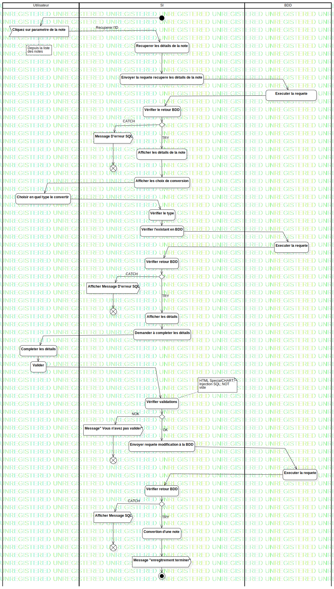

ActD Convertir une note
UMLActivity
Untitled
::
Note
::
ActD Convertir une note
Description
none
Diagrams

ActD Convertir une note
Groups
Utilisateur
SI
BDD
Edges
(InitialNode1→Id de la note)
(Id de la note→Recuperer les détails de la note)
(Recuperer les détails de la note→Executer la requete)
(Executer la requete→Afficher les détails de la note)
(Afficher les détails de la note→Choisir en quel type le convertir)
* (InitialNode1→Cliquez sur parametre de la note)
Recuperer l'ID (Cliquez sur parametre de la note→Recuperer les détails de la note)
(Recuperer les détails de la note→Envoyer la requete recupere les détails de la note)
(Envoyer la requete recupere les détails de la note→Executer la requete)
(Executer la requete→Vérifier le retour BDD)
(Vérifier le retour BDD→MergeNode1)
TRY (MergeNode1→Afficher les détails de la note)
(Afficher les choix de conversion→Choisir en quel type le convertir)
(Afficher les détails de la note→Afficher les choix de conversion)
(Choisir en quel type le convertir→Vérifier le type)
(Vérifier le type→Vérifier l'existant en BDD)
(Vérifier l'existant en BDD→Executer la requete)
(Executer la requete→Vérifier retour BDD)
(Vérifier retour BDD→DecisionNode1)
(DecisionNode1→Afficher les détails)
(Demander à completer les détails→Completer les détails)
(Completer les détails→Valider)
(Afficher les détails→Demander à completer les détails)
(Valider→Vérifier validations)
(Vérifier validations→DecisionNode2)
OK (DecisionNode2→Envoyer requete modification à la BDD)
(Envoyer requete modification à la BDD→Executer la requete)
(Executer la requete→Vérifier retour BDD)
(Vérifier retour BDD→DecisionNode2)
TRY (DecisionNode2→Convertion d'une note)
(Convertion d'une note→Message "enregitrement terminer")
(Message "enregitrement terminer"→ActivityFinalNode1)
CATCH (MergeNode1→Message D'erreur SQL)
(Message D'erreur SQL→FlowFinalNode1)
TRY (DecisionNode1→Afficher les détails)
CATCH (DecisionNode1→Afficher Message D'erreur SQL)
(Afficher Message D'erreur SQL→FlowFinalNode2)
NOK (DecisionNode2→Message" Vous n'avez pas valider")
(Message" Vous n'avez pas valider"→FlowFinalNode3)
(DecisionNode2→Afficher Message SQL)
(Afficher Message SQL→FlowFinalNode4)
CATCH (DecisionNode2→Afficher Message SQL)
(InitialNode1→Cliquez sur parametre de la note)
Properties
Name
Value
name
ActD Convertir une note
stereotype
null
visibility
public
isReentrant
true
isReadOnly
false
isSingleExecution
false
Owned Elements
ActD Convertir une note